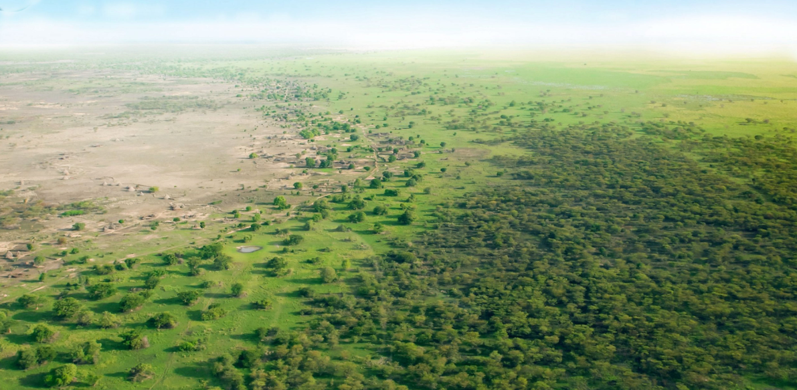
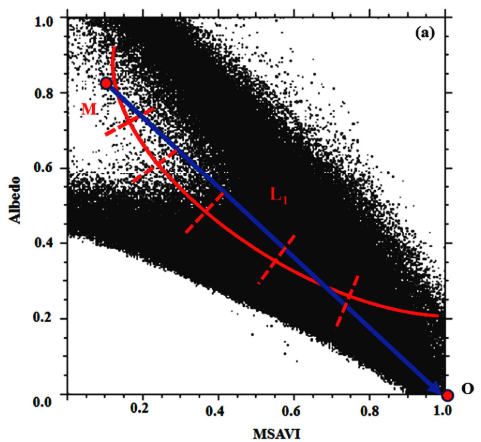

Project Desert Rose - Identifying desertification risk areas in Niger

Project Summary
Problem Statement
Niger, a landlocked country in Africa’s Sahel region, faces rising temperatures, low rainfall and a decrease in arable land, indicative of desertification. The shrinking land and water sources pose food and water security threats, risking humanitarian crises and conflicts. Initiatives like Action Against Desertification (FAO-UN) and regional projects (FLEUVE, BRICKS) aim to restore degraded land and push back the desert.
However, as each task force operates independently, the nation lacks centralised visibility on desertification risks to mobilise the GGW action plan with urgency and prioritise resources systematically across diverse actors.
End User
This application is meant for the local government, NGOs and the different organisations involved in the Great Green Wall initiative so that there is a centralised platform where they can visualise to what extent desertification affects Niger people at high spatial resolution.
Future extensions of the tool include highlighting specific areas within the designated Great Green Wall path that are most suitable for planting trees and soil-enriching crops, making the insights more actionable for the implementing task forces and farmers nationwide.
Data Source
To derive the Desertification Index (detailed methodology below), we used Landsat 8 OLI data (2013-present) for hyperspectral remote sensing data containing all the necessary spectral bands. Furthermore, to quantify the affected population, we used the WorldPop global population raster data at 100m resolution (2000-2020). Finally, to delineate the boundaries of interest, we will use Niger Administrative Boundaries, Level 0 through 2.
Methodology
According to Wu et al. (2019), the Desertification Risk Index (DRI) can be calculated using Landsat 8 remote sensing data, from which Albedo and Modified Soil Adjusted Vegetation Index (MSAVI) were calculated.
\[ Albedo = 0.356B_{blue} + 0.13B_{red} + 0.373B_{nir} + 0.085B_{swir1} + 0.072B_{swir2} - 0.0018 \]
\[ MSAVI = \frac{2B_{nir} + 1 - \sqrt{(2B_{nir} + 1)^2 - 8(B_{nir}-B_{red})}}2 \]
The Desertification Risk Index (DRI) is then defined as:
\[ DRI = L_1 = \sqrt{(MSAVI-1)^2 + Albedo^2} \]

It is worth noting that this methodology has shown relatively high accuracy in detecting and classifying desertification in the Naiman Banner in Inner Mongolia (China) but not specifically in the Southern Sahel where Niger is located. However, thanks to the fact that the two areas share similar characteristics in terms of wetness and vegetation, we see the application of this methodology as appropriate for the Southern Sahel region.
Interface
First, the user picks the year of interest using a slider. This will produce populated areas with high desertification risks. To acquire statistics on the extent of human impact, the user can choose a region of interest from the drop-down menu or draw the area of interest using the tool provided, to know the population share that lives on degraded land.
The Application
How it Works
Calculating Desertification Risk Index from Land-8 dataset
Explain the DRI calculation + the transformation we made to normalise the indices…
Map.setCenter(35.51898, 33.90153, 15);
Map.setOptions("satellite");
var aoi = ee.Geometry.Point(35.51898, 33.90153).buffer(3000);Estimating the affected population using the WorldPop dataset
Explain the code to mask DRI layer + Population to identify high-risk populated areas to produce stats
User Interface
Use this section to explain interactive components:
Split panels
Dropdown menu
Draw polygons
Map.setCenter(35.51898, 33.90153, 15); Map.setOptions("satellite"); var aoi = ee.Geometry.Point(35.51898, 33.90153).buffer(3000);You can include images:

References
Wen, Ye & Guo, Bing & Zang, Wenqian & Ge, Dazhuan & Luo, Wei & Zhao, Huihui. (2020). Desertification detection model in Naiman Banner based on the albedo-modified soil adjusted vegetation index feature space using the Landsat8 OLI images. Geomatics, Natural Hazards and Risk. 11. 544-558. 10.1080/19475705.2020.1734100.
Wu, Z., Lei, S., Bian, Z. et al. Study of the desertification index based on the albedo-MSAVI feature space for semi-arid steppe region. Environ Earth Sci 78, 232 (2019). https://doi.org/10.1007/s12665-019-8111-9